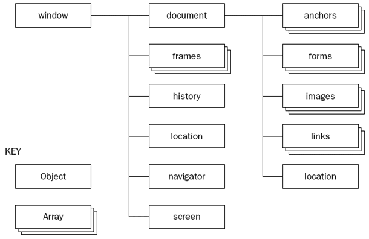

Filip Svetličić - senior frontend developer, Inchoo http://inchoo.net/author/filip-svetlicic/ Osijek Software City, http://softwarecity.hr J. J. Strossmayer University of Osijek – Department of Mathematics, http://www.mathos.unios.hr/
http://ficosvt.github.io/bom-dom-events/ (source at https://github.com/ficosvt/bom-dom-events/)
Google Chrome with built-in dev tools https://developers.google.com/chrome-developer-tools/
http://www.codecademy.com/ Learn to code interactively. Register. http://jsfiddle.net Online code editor and playground. Register.
All browsers are split into different parts (objects) that can be accessed trough Javascript. These parts are known as the Browser Object Model (BOM) Main object is Window and it’s at the top of the hierarchy. All global JavaScript objects, methods, and properties automatically become members of the window object. These allow you do things like, redirecting the user to a different web page, get the size of the browser window, access all the HTML elements on the page and, again, a whole lot more besides. Example of relations between objects in BOM 
Returns the Document object for the window. When an HTML document is loaded into a web browser, it becomes a document object. The document object is the root node of the HTML document and the "owner" of all other nodes: (element nodes, text nodes, attribute nodes, and comment nodes). The document object provides properties and methods to access all node objects, from within JavaScript.
The navigator object contains information about the browser, like the userAgent, product etc.
The location object contains information about the current URL. The location object is part of the window object and is accessed through the window.location property.
The history object contains the URLs visited by the user (within a browser window). The history object is part of the window object and is accessed through the window.history property.
Object screen contains information about display, including it’s width and height and many other useful informations. Although not used frequently, it’s a good information source for functionalities that could change width or height of the browser window.
window.alert(); window.confirm(); winodw.prompt(); window.open(); window.print(); window.scrollTo();
When a web page is loaded, the browser creates a Document Object Model of the page.
The HTML DOM model is constructed as a tree of Objects: With the object model, JavaScript gets all the power it needs to create dynamic HTML The HTML DOM is a standard object model and programming interface for HTML. It defines:

The JavaScript Document object is the container for all HTML HEAD and BODY objects associated within the HTML tags of an HTML document. The document object provides properties and methods to access all node objects, from within JavaScript.
In the HTML DOM, the Element object represents an HTML element. Element objects can have child nodes of type element nodes, text nodes, or comment nodes. A NodeList object represents a list of nodes, like an HTML element's collection of child nodes. Elements can also have attributes.
Oldies
Events are signals generated when specific actions occur. JavaScript is aware of these signals, and scripts can be built to react to these events. An event handler is a routine that is used to handle the event, allowing a programmer to write code that will be executed when the event occurs.
The oldest DOM implementation. Events are attached to elements and can be added in form of attributes or directly.
An event listener is a procedure or function in a computer program that waits for an event to occur; that event may be a user clicking or moving the mouse, pressing a key on the keyboard, or an internal timer or interrupt. The listener is in effect a loop that is programmed to react to an input or signal.Click me
click keydown,keyup,keypress load,unload mouseover,mouseout mousemoves scroll, submit touchstart touchmove touchend touchcancelClick me 2
Capturing vs bubbling
Bubbling is default! Just remember that you're going from inside. Event.stopPropagation();
RTFM :) Which Element has which Event?
http://ryanmorr.com/understanding-scope-and-context-in-javascript/ http://ejohn.org/apps/learn/ https://developer.mozilla.org/en-US/docs/Web/JavaScript/Closures https://developer.mozilla.org/en-US/docs/Web/JavaScript/Reference/Global_Objects/Function http://www.w3schools.com/js/js_function_closures.asp https://developer.mozilla.org/en-US/docs/Web/JavaScript/Closures https://javascriptweblog.wordpress.com/2010/10/25/understanding-javascript-closures/
2015 Filip Svetličić, Inchoo